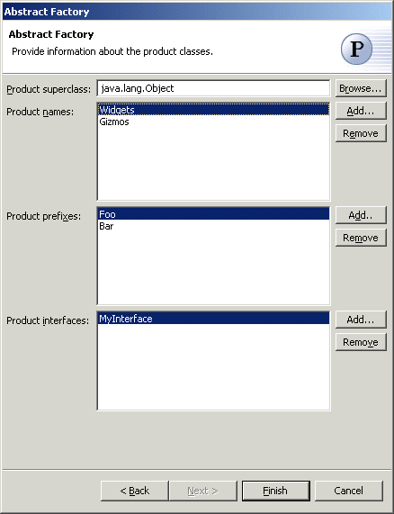

Abstract Factory Pattern
Also known as: Kit
The
Abstract Factory Pattern provides an interface for creating families of related or
dependent objects without specifying their concrete classes.
Wizard
Applicability
Additional Resources
| Option |
Description |
Default |
| Source folder |
Enter a source folder for the new class. Either type a valid
source folder path or click Browse to select a source
folder via a dialog. |
The source folder of the element that was selected when the
wizard was started. |
| Package |
Enter a package to contain the new class. Either type a
valid package name or click Browse to select a package via
a dialog. |
The package of the element that was selected when the wizard
has been started. |
| Class name |
Type a name for the new factory class. |
<Factory> |
| Superclass |
Type or click Browse to
select a superclass for this class. |
<java.lang.Object> |
| Interfaces |
Click Add to choose
interfaces that the new factory class implements. |
<blank> |
| Field name |
Type or select the name of the field that will contain the
instance of the concrete factory class |
<ConcreteFactory> |
| Generate factory access methods |
Determines whether get and set methods are generated for the
factory field. |
<true> |
| Generate concrete factories and products in separate
packages |
Determines whether new packages should be created for each
factory and set of products |
<true> |

| Option |
Description |
Default |
| Product Superclass |
Type or click Browse to
select a superclass for all products. |
<java.lang.Object> |
| Product names |
Click Add to enter the names of the products that can be
created by the factory |
<blank> |
| Product prefixes |
Click Add to enter the prefixes that will be added to the
product names to create concrete product classes |
<blank> |
| Product interfaces |
Click Add to choose
interfaces that the new product classes implement. |
<blank> |
Use the Abstract Factory pattern when
- a system should be independent of how its products are created, composed, and
represented.
- a system should be configured with one of multiple families of products.
- a family of related product objects is designed to be used together, and you need to
enforce this constraint.
- you want to provide a class library of products, and you want to reveal just their
interfaces, not their implementations.
http://c2.com/cgi/wiki?AbstractFactory
http://www.wikipedia.com/wiki/Abstract+factory+pattern
http://www.cmcrossroads.com/bradapp/javapats.html#AbstractFactory
http://www.dofactory.com/patterns/pattern_abstract.asp
http://www.castle-cadenza.demon.co.uk/abfact.htm |